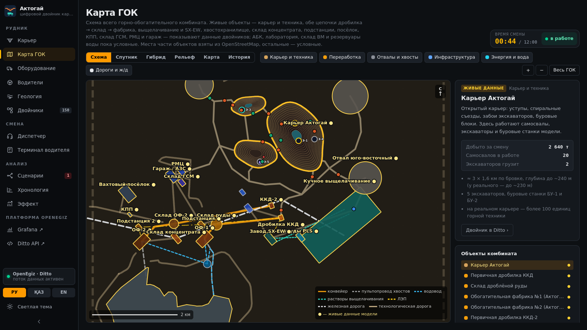
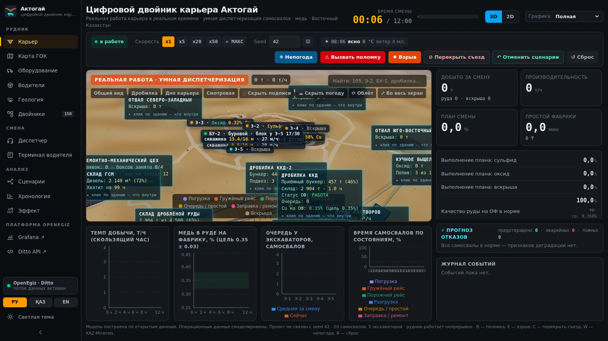
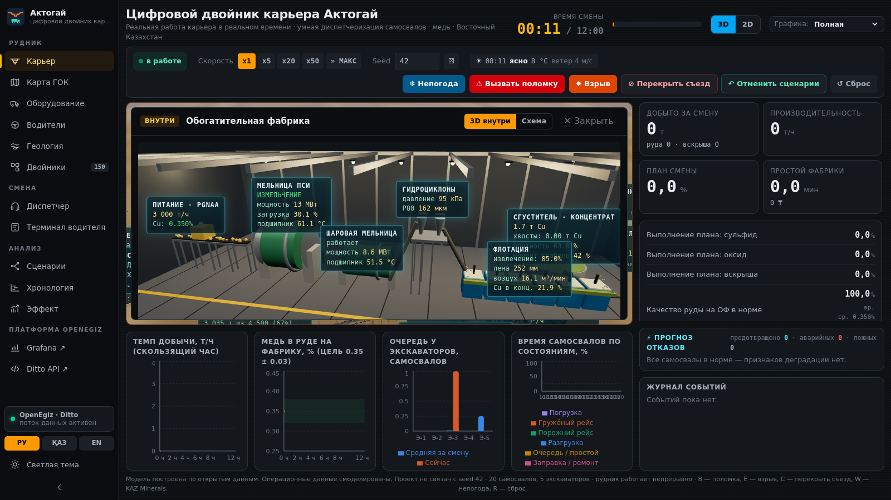
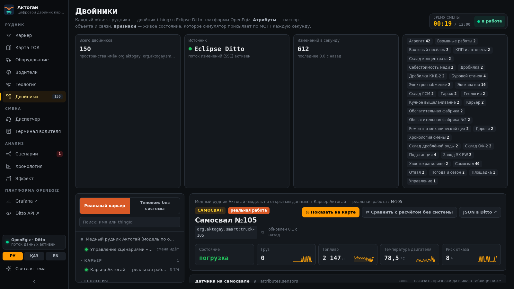
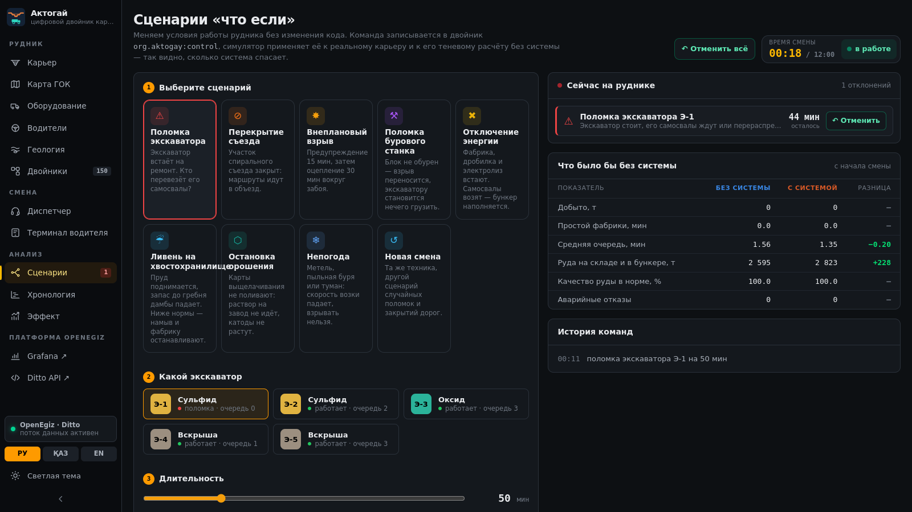
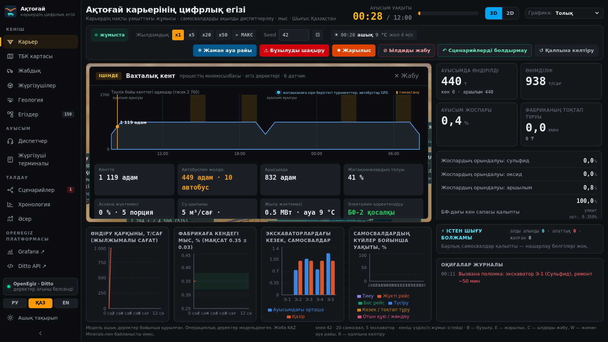
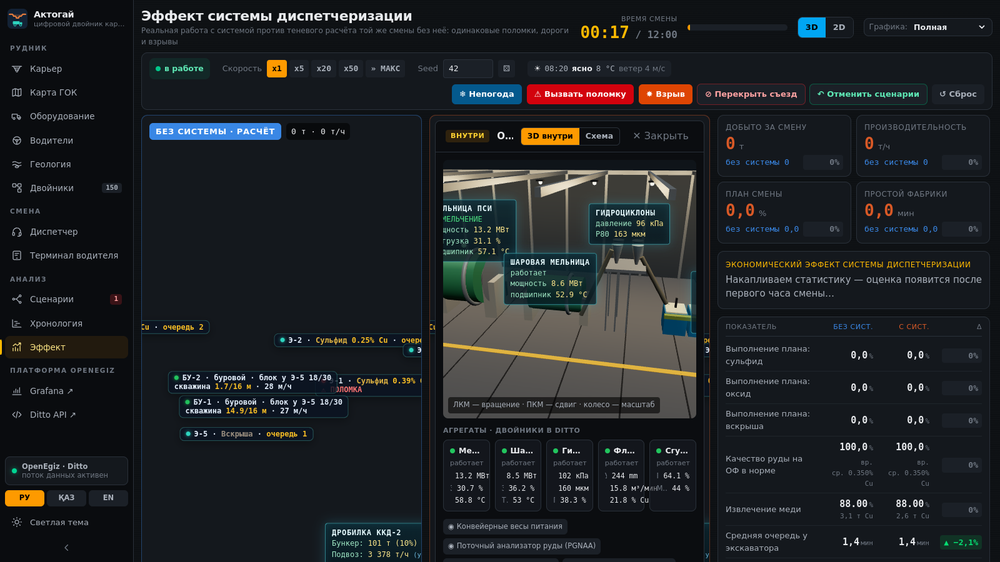

Сульфидная руда кончается на складе перед фабрикой — обогатительная фабрика простаивает. Это самая дорогая потеря: ≈15 млн ₸ за час (оценка).
После поломки экскаватора закреплённые самосвалы стоят в очереди к нему, а соседние забои недогружены.
Двигатель, гидравлика, шины ломаются без предупреждения: эвакуация, вторичные повреждения, ремонт втрое дольше планового.
Самосвал, 7: GNSS ГЛОНАСС/GPS (RTK), бортовое взвешивание, уровень топлива, температура ОЖ через ЭБУ (CAN J1939), вибродатчик рамы (MEMS), давление шин TPMS, бортовой контроллер.
Объекты комбината: уровнемеры и конвейерные весы, PGNAA и XRF пульпы, пьезометры дамбы, выпрямитель электролиза, метеостанция, счётчики подстанций, турникеты посёлка, автовесы и ANPR на КПП, уровнемеры склада ГСМ. Полный список — SENSORS.md.
attributes._parents — иерархия (по ней строит дерево приложение OpenEgiz → Twins), attributes.feeds — поток материала: экскаватор → дробилка / выщелачивание / отвал, дробилка → фабрика.
attributes: материал, производительность, грузоподъёмность, ёмкость бункера, паспорт датчиков. features {value, unit}: положение на графе дорог, груз, Cu %, топливо, температура двигателя, вибрация, давление шин, риск отказа, очередь, бункер…
team/aktogay/app/src/platform/twins.ts — контракт двойников; service/main.ts — создание и публикация; src/sim/ — модель.

Сульфид: ККД → склад → ОФ-1, концентрат на склад и в вагоны. Вторая цепочка ККД-2 → склад → ОФ-2 считается так же (подвоз к ней условный).
Оксид: карты кучного выщелачивания с графиком орошения → пруды PLS → завод SX-EW, катодная медь по закону Фарадея.
Хвостохранилище по контуру из OpenStreetMap: намыв, пруд, запас до гребня, оборотная вода; ливень поднимает пруд.
Инфраструктура: подстанции и ЛЭП, вахтовый посёлок с генератором, КПП с автовесами, склад ГСМ, РМЦ. Дороги к ним — из OpenStreetMap.
Overlay team/aktogay/compose.yml к стенду, как Пример рудника: make aktogay поднимает платформу и карьер.
Значок «● OpenEgiz · Ditto»: всё на экране — из двойников. Без платформы сайт честно пишет «автономный режим».
Команда — изменение признака в Ditto. Результат и история команд — в признаке status.
Погрузка с шумом времени, поломки 40–120 мин. Содержание Cu в забое плавно меняется по ходу отработки. Бункер смешивает руду, фабрика забирает 50 т/мин; отклонение качества снижает извлечение меди.
Температура двигателя, вибрация рамы, давление шин раз в 10 с. 75% отказов имеют 60–120 мин дрейфа одного параметра, 25% внезапные, есть безобидные аномалии — ложные тревоги как в жизни.
Плановый взрыв в обед: предупреждение 15 мин, оцепление 30 мин, радиус 240 м. Случайные поломки и закрытия дорог генерируются из seed — одинаковый seed даёт бит-в-бит одинаковую смену (тест).

Three.js-сцена по той же геометрии, что граф дорог: уступы, съезды, забои, дробилка с конвейером на фабрику, отвал, выщелачивание, стоянка.
Кольцо под самосвалом — цвет состояния, кузов с грузом цвета материала, опрокидывание при разгрузке; экскаватор поворачивается и копает; уровень в силосе; закрытые участки и зоны взрывов.
Клик по машине — карточка с датчиками и графиком «датчик против модели». Камеры: общий вид, дробилка, дно, разрез, облёт, следование.
День и ночь, погода: солнце идёт по небу Актогая, к вечеру зажигаются окна и мачты; метель и пыль видны на сцене (их можно скрыть кнопкой). Без видеокарты — лёгкий режим или 2D-схема.

3D-цех дробилки, фабрики и гаража: мельницы, флотация, конвейеры, ремонтные боксы — на живых данных агрегатов.
Мнемосхемы у всех объектов: склад, выщелачивание и SX-EW, хвостохранилище, склад концентрата, подстанции (однолинейная схема), посёлок, КПП, склад ГСМ, РМЦ.
На схеме отмечено, какой датчик даёт каждую величину; у каждого агрегата — подшипники, вибрация и свой двойник в Ditto.

Дерево по _parents, поиск по имени и thingId, цветной индикатор состояния у каждого объекта.
Карточка: паспорт (attributes), все признаки (features) с единицами и мини-графиками, подсветка изменений, связи feeds.
«Сравнить» — тот же объект в теневом расчёте рядом. «Показать на карте» — переход в 3D с выделением.
Датчики самосвала: GNSS, взвешивание, топливо, температура ОЖ, вибрация рамы, TPMS, ЭБУ — что стоит, где, как часто и какие признаки заполняет. Живые значения ~60 изменений/с.

| Сценарий | Отмена |
|---|---|
| Поломка экскаватора Э-1…Э-5, 10–180 мин | repair |
| Перекрытие съезда 6 участков, 10–120 мин, объезд | open_road |
| Внеплановый взрыв 15 мин предупреждение + 30 мин оцепление | cancel_blast |
| Отключение энергии фабрики, дробилки, электролиз, посёлок на генераторе, КПП вручную | power_cut |
| Непогода, ливень, стоп орошения метель/пыль/туман, приток в хвостохранилище | weather … |
| Парк техники добавить и вывести самосвалы и экскаваторы | reset {fleet} |
Плюс «Отменить всё» и сам срок окончания. Запуск — из раздела «Сценарии», с кнопок на 3D, из панели Grafana или одним PUT в Ditto. Справа на экране видно, что было бы без системы.
«Своя петля» и порог перезакрепления — машины не гоняют через весь карьер ради мелкой выгоды.
Тепловая модель знает, какой должна быть температура в текущем режиме; невязки трёх датчиков → индекс деградации → тренд → время до отказа. При тревоге — плановый ремонт (втрое короче).
Глубокий забой богаче (~0,42% Cu), верхний беднее (~0,29%). Диспетчер держит питание фабрики в коридоре 0,35 ± 0,03% Cu по прогнозу бункера с учётом едущих машин.
График взрывов известен заранее — к забою под оцепление машины не отправляются. KPI смены и эффект в ₸ с формулой: простои, дробилка, топливо, ремонты, потери меди × 670 смен в год.
Климатические нормы Актогая 2015–2024 (ERA5): метель снижает скорость возки и запрещает взрывы, мороз — дробилку и выщелачивание. Январь ≈ 8,7 млрд ₸/год эффекта, июль ≈ 6,8.
Фабрики, электролиз (по току серии), насосные по расходу и напору; ~21 кВт·ч на тонну руды, энергия холостого хода фабрики при простое.
Топливо по рейсам, энергия, ремонты, простои, кислота: $1,12 за фунт против $1,16 без системы.
Пересменка и автобусы, генератор при отключении; очередь на автовесах; завоз дизеля автоцистернами через КПП; заявки на ремонт, шины и запчасти.

Переключатель РУ / ҚАЗ / EN: переводится весь интерфейс, включая 3D-подписи, схемы и журнал событий.

Слева — без системы. Закреплённые самосвалы ждут сломанный Э-1 в очереди, бункер дробилки пустеет.
Справа — с системой. Машины Э-1 сразу ушли на другие забои, дробилка работает.
Справа — разница KPI в реальном времени и экономический эффект с раскрываемой формулой. Оценка появляется после первого часа смены.
| Показатель за смену | Без системы | С системой | Δ |
|---|---|---|---|
| Простой фабрики без руды, мин | 4,6 | 0,0 | −100% |
| Аварийные отказы самосвалов | 4,4 | 1,1 | −74% |
| Средняя очередь, мин | 2,4 | 1,7 | −30% |
| Руда на ОФ в коридоре качества, % времени | 90,8 | 96,7 | +5,9 п.п. |
| Оксид на выщелачивание, т | 15 891 | 17 345 | +9,1% |
| Добыто всего, т | 100 104 | 105 124 | +5,0% |
| Себестоимость меди C1, $/фунт | 1,16 | 1,12 | −3,0% |
Seed 1–20, 20 самосвалов, 12-часовые смены, реальная геометрия Актогая (три выработки, три отвала, дороги по снимку), смена в октябре по реальному климату Актогая. Система добыла не меньше во всех 20 сменах.
Эффект зависит от дефицита техники: 15 самосвалов — +8,1% добычи и ≈31 млрд ₸/год; 25 самосвалов — добыча почти та же (+0,8%), узкое место — экскаваторы; эффект ≈6,1 млрд ₸/год за счёт плановых ремонтов. Сезон тоже решает: январь ≈8,7 млрд, июль ≈6,8 — чем хуже погода, тем больше выигрывает система.
Поднимает платформу OpenEgiz (пароли генерируются), собирает два образа из team/aktogay/app, создаёт двойники и запускает смену. Внешних датасетов нет.
main в Ubuntu 24.04 (WSL2 + Docker): двойники создаются, время смены растёт, данные в InfluxDB, интерфейс и Grafana открываются. Сейчас на стенде 150 двойниковbroken, отмена → снова в работеНе замерено отдельно: сборка без кэша Docker на 8 vCPU (ожидаем с запасом в лимит 75 мин).